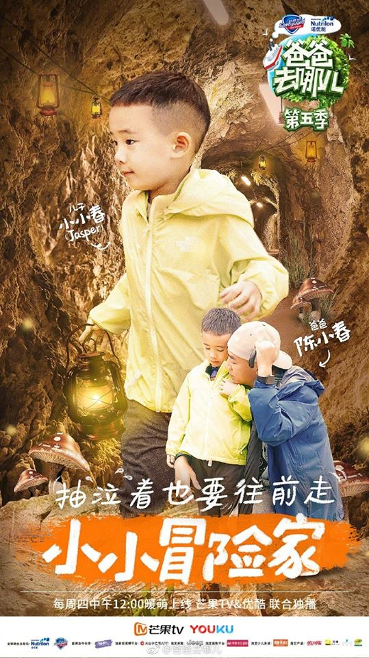
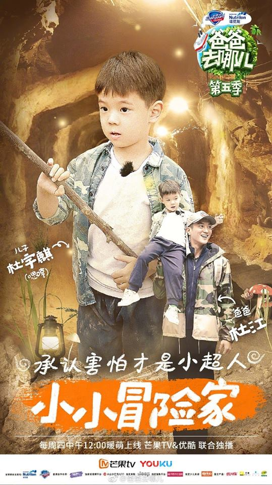
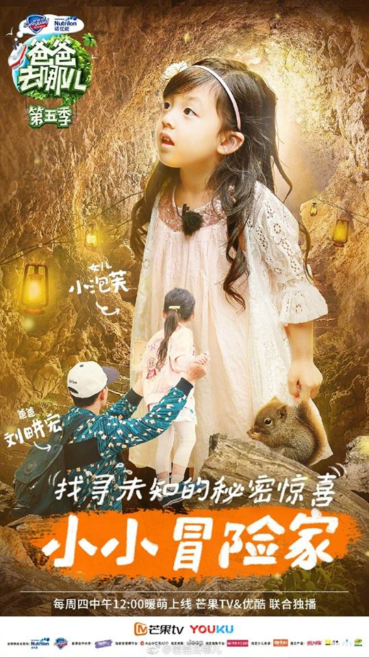
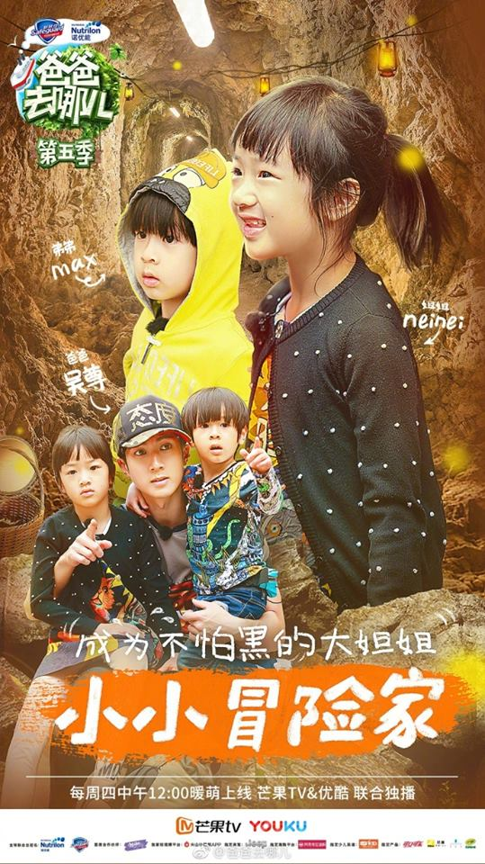
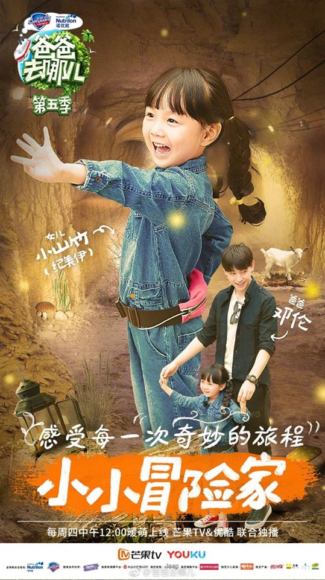

《爸爸去哪兒》第五季，是中國大陸芒果TV於2017年第四季度推出的一檔親子互動真人秀節目。節目版權引進自韓國MBC電視台，概念參考自MBC節目《爸爸 你去哪兒》，是該系列節目的第五季，由製作人周山及其團隊製作。節目於2017年8月開始錄製，2017年9月7日12:00播出「先導篇」，2017年9月14日起每週四12:00上線播出，首播平台為芒果TV與優酷網。

| 父親 | 孩子 | ||
|---|---|---|---|
| 姓名 | 生日 | 姓名 | 生日 |
| 陳小春 | 1967年7月8日 | 陳胤捷 (Jasper/小小春) | 2013年7月1日 |
| 杜江 | 1985年9月10日 | 杜宇麒 (嗯哼) | 2013年9月19日 |
| 劉畊宏 | 1972年10月7日 | 劉宇芙 (小泡芙) | 2013年7月22日 |
| 吳尊 | 1979年10月10日 | 吳欣怡 (Neinei) | 2010年10月10日 |
| Max | 2013年10月11日 | ||
| 鄧倫 | 1992年10月21日 | 紀美伊 (小山竹) | 2012年9月19日 |
陳小春，香港男歌手、演員，於2010年和香港藝人應采兒結婚，現育有一子，名叫陳胤捷，英文名字為Jasper。
杜江，中國大陸男演員，2013年與同為演員的霍思燕結婚，同年，生下一個男生，取名為杜宇麒，小名是嗯哼。
劉畊宏，台灣高雄人，台灣歌手、演員及音樂創作人，2007年和王婉霏結婚，有三個小孩，一男兩女，目前和爸爸一起參加節目錄製的是二女兒-劉宇芙(小泡芙)。
吳尊，本名吳吉尊，汶萊出生，台灣男藝人，吳尊的妻子林麗瑩同為汶萊華僑，於2009年結婚，翌年10月，產下一女，女兒叫吳欣怡（乳名：Neinei）。2013年10月，吳尊妻子產下第二胎兒子（Max）。
鄧倫，中國男演員，未婚，目前在節目中是擔任實習爸爸的角色，和紀美伊(小山竹)並沒有血緣關係。而小山竹是素人，出生於瀋陽。
爸爸去哪兒是一部具有教育意義且又不失娛樂性的節目，藉由一些活動讓孩子們明白各行各業的辛苦，又能看到傳統的農村生活，還有父子間有愛的互動，小孩子單純軟萌的模樣和反應更是這節目最大的特點，不管你喜不喜歡小孩子，看了這個節目一定會被他們的可愛的舉動融化的。